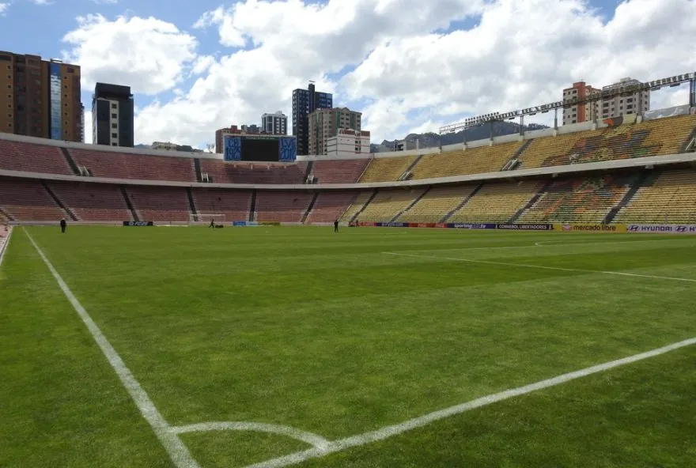
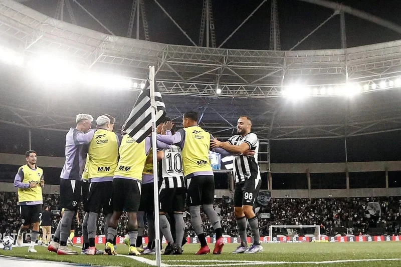
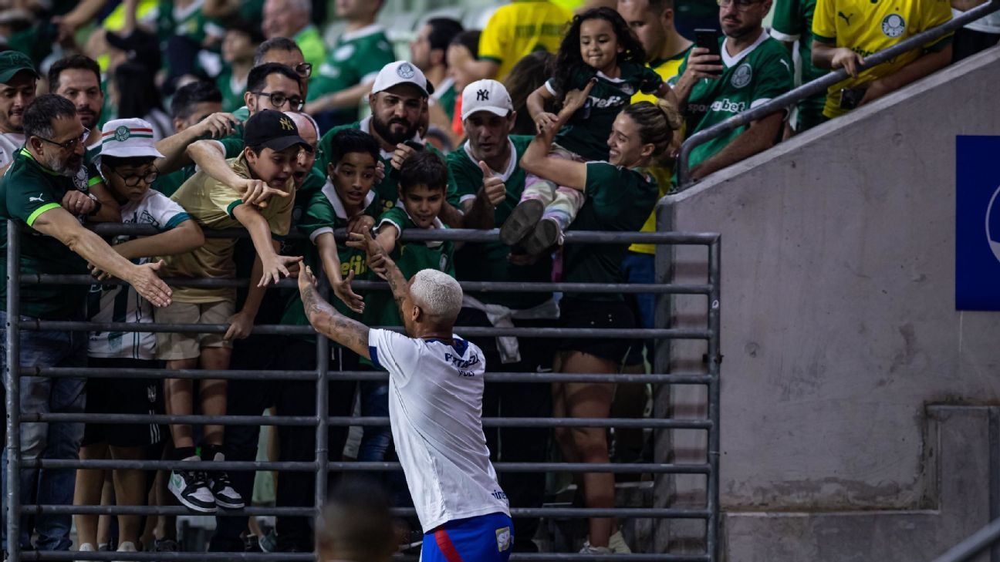
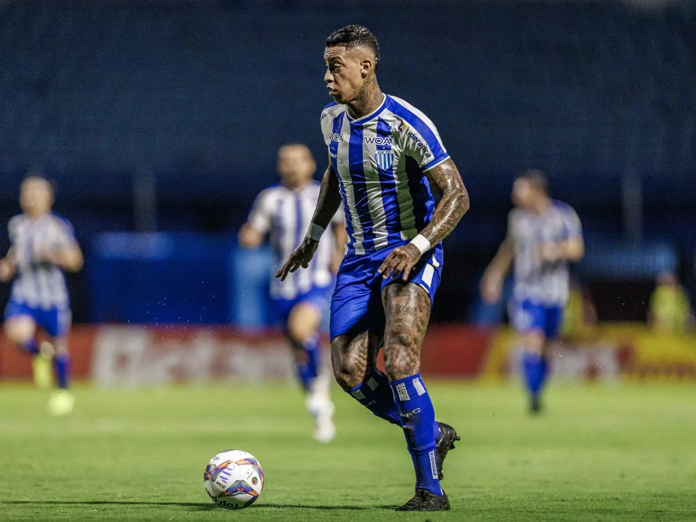

Futebol Nacional - Atlético-MG
Bolívar x Atlético-MG: onde assistir ao vivo, horário e escalações
Veja também desfalques, arbitragem e outras informações do jogo de ida das quartas de final da Copa Sul-Americana; ge acompanha a partida em Tempo Real

Futebol Nacional - Botafogo x Mirassol
Botafogo x Mirassol: onde assistir ao vivo, horário e escalações
Veja desfalques, arbitragem e outras informações do jogo atrasado da 12ª rodada do Brasileirão; Premiere transmite

Futebol Nacional - Superliga Acreana
Com 64 times, 15ª Campeonato da Superliga Acreana começa nesta quarta-feira, na Arena da Floresta
Abertura terá shows, escolha da Musa Superliga e Miss Simpatia, além da final e disputa do 3º lugar de 2024, às 18h. Times brigam pelo título no formato eliminatário. Campeão fatura R$ 15 mil

Futebol Nacional - Novorizontino
Bruno José dedica gol em vitória do Novorizontino ao primeiro filho: "Momento marcante na vida"
Atacante, que será pai de Henrique José, avalia positivamente campanha do Tigre na Série B e vê oscilações com naturalidade

Brasileirão Série A - Palmeiras
Deyverson é tietado por torcida do Palmeiras após goleada no Fortaleza, e cena viraliza
Após a vitória, o atacante foi cercado por torcedores alviverdes e o momento rapidamente viralizou nas redes sociais.

Série B - Avaí
Alef Manga é afastado do elenco principal do Avaí
Atacante treina separado dos companheiros que disputam a Série B, decisão foi confirmada pela diretoria do clube catarinense.

Futebol Nacional - Atlético-MG
Sampaoli desabafa ao analisar ataque do Atlético-MG: "Precisa melhorar bastante"
Treinador do Galo convocou a torcida para o jogo contra o Bolívar, decisivo para a classificação na Copa Sul-Americana.
Brasileirão Série A
| Pos | Logo | Clube | Pts | PJ | VIT | E | DER | SG |
|---|
Campeonato Mineiro - Final 1/2
08/03/2025
CAM

4
×
0
 AME
AME
Brasileirão Série A
27/07/2025
CRU

1
×
2
 CEA
CEA
Brasileirão Série A
30/08/2025
CEA
0
×
1
 JUV
JUV